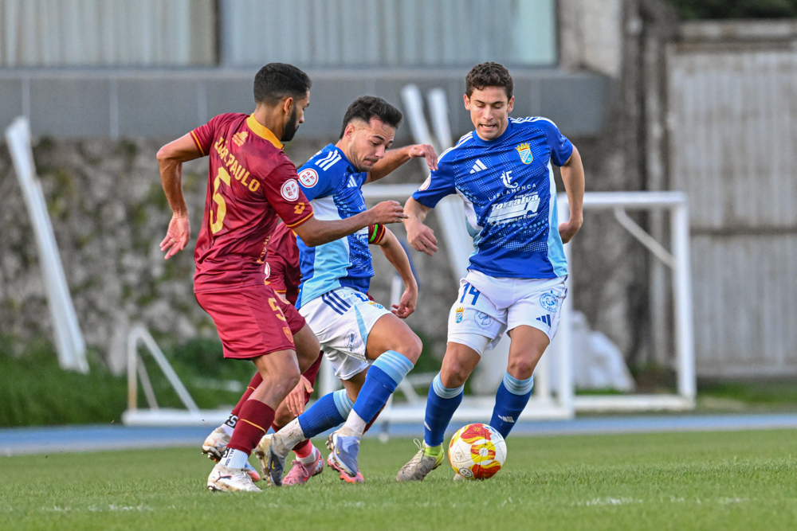

Jaime López renueva con el Xerez CD

Foto: PuroXerecismoEl centrocampista sevillano seguirá vistiendo la zamarra azulina durante la temporada 2026/27 tras alcanzar un acuerdo con la entidad.
Jerez de la Frontera. El Xerez CD ha confirmado, a través de su página web oficial, la renovación de Jaime López para la temporada 2026/2027, la tercera consecutiva del club en Segunda RFEF. El centrocampista sevillano seguirá vistiendo la zamarra azulina tras alcanzar un acuerdo con la entidad.
López fue una pieza importante en el esquema de Diego Galiano la pasada campaña, hasta que una lesión interrumpió su progresión. Su renovación refuerza el centro del campo de cara a un curso que se presenta exigente, con la novedad de los desplazamientos a Canarias que introduce el nuevo Grupo IV de Segunda RFEF.
Un movimiento más dentro de la planificación del verano
La renovación de López se suma al trabajo que la dirección deportiva azulina, con Miguel Ángel Gutiérrez e Iago Díaz al frente, viene desarrollando este mercado estival. El club ya ha confirmado la continuidad de nueve futbolistas de la pasada temporada y ha incorporado a Carlos Pantoja, Manu Galán, Fali y Rubén Mesa, en un proyecto que dirigirá Xavi Molist tras la salida de Diego Galiano del banquillo.
Con esta renovación, el Xerez CD asegura conocimiento de la categoría y del propio club en un centro del campo que va tomando forma de cara a la pretemporada.
← Volver a la portada